Peluang Usaha Pasco Iceblend
PASCO ICEBLEND
workshop pembuatan booth dengan kualitas terbaik
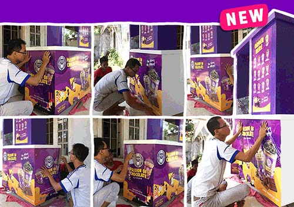
PASCO LOVERS
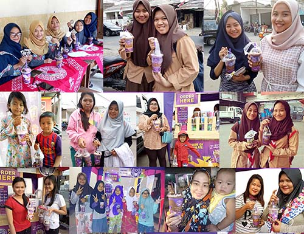
Passion of Chocolate since, 2010
JADILAH MITRA SUKSES PASCO SELANJUTNYA!
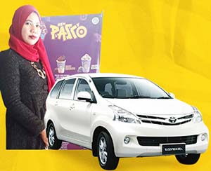
Ibu Irella (Sibolga)
Penjualan dalam sehari mencapai 100 cup, untuk weekend beliau mampu mendapat penjualan hingga 200 cup. Saat ini beliau telah memiliki 3 gerai outlet Pasco, dengan keuntungan penjualannya beliau mampu membeli sebuah mobil Avanza dan mencukupi kebutuhan sekolah anak-anaknya.
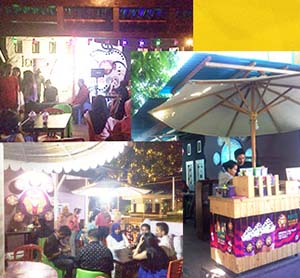
Ibu Asnur (Ternate)
Berkat hasil dari kerja keras Ibu Asnur dalam mempromosikan serta terjun langsung dalam pengembangan usahanya, kini beliau mampu menjual hinga 200 cup dalam sehari di satu outletnya, sampai saat ini beliau telah memiliki 3 gerai outlet Pasco. Dengan keuntungannya beliau dapat membeli motor untuk membantu kegiatan sehari-hari, serta digunakan juga untuk membangun rumah.
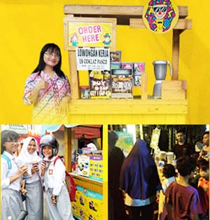
Ibu Amelia (Situbondo)
Mitra kami asal Situbondo yakni Ibu Amelia mampu menjual hingga 100 cup per harinya. Beliau menjual dengan harga jual Rp 6.000 sampai Rp 10.000 dengan memanfaatkan peluang yang ada, beliau mendapatkan omzet per bulan hingga Rp 19.000.000,- yang beliau gunakan untuk membeli motor dan kebutuhan lainnya.
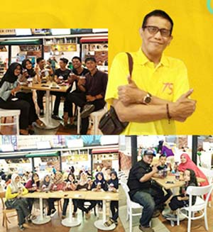
Bapak Slamet (Pekanbaru)
Bapak Slamet adalah salah satu mitra Pasco Ice Blend di Pekanbaru, beliau membuka outletnya di pusat perbelanjaan Transmart Pekanbaru dan mampu menjual 100 cup lebih salam sehari. Kini beliau berencana mengembangkan usahanya dengan membuka outlet baru di tempat lain.
SUDAH SIAPKAH ANDA UNTUK HIDUP SUKSES?
Jadilah mitra sukses pasco ice blend selanjutnya!
REWARD PENJUALAN MITRA TERBAIK
Kompetisi #1
Jalan-jalan ke Thailand
Pemenang kompetisi penjualan periode 1 :
- Faisal (Ponorogo)
- Vini (Bekasi)
- Pristy (Jakarta)

Kompetisi #2
Jalan-jalan ke Hongkong
Pemenang kompetisi penjualan periode 2 : Ronny (Mataram) & Jeffry (Surabaya)
Kompetisi #3
Mendapatkan uang tunai senilai Rp 30.000.000,-
Pemenang kompetisi penjualan periode 3 : Irela (Medan)
TESTIMONI & KECERIAAN PASCO LOVERS
“Bahagia itu ketika kamu minum segelas Passion of Chocolate sama sahabat kamu.” - Pasco Lover -
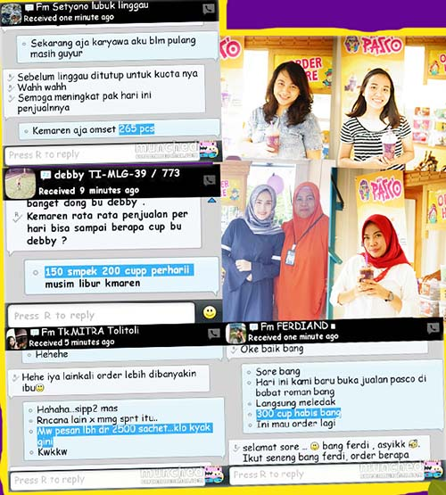

DETAIL PRODUK PASCO
Ice Pasco merupakan pioneer ice blend di Indonesia, berdiri sejak tahun 2010 dan satu-satunya produk di bidang ice blend yang terus berinovasi dan selalu meningkatkan kualitas pelayanan kepada mitra hingga saat ini.
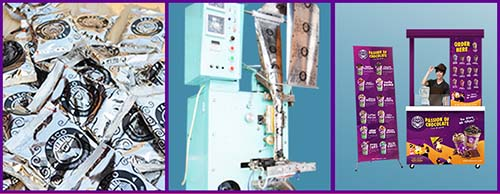
BUBUK PACKAGING KUALITAS TINGGI
Bahan baku dikemas dengan packaging terbaik standard nasional.
MESIN PACKING NASIONAL
Kualitas pengolahan yang terjaga dengan baik, serta quality control dilakukan setiap saat.
BOOTH MURAH EKSLUSIF
Dengan harga yang sangat terjangkau sudah bisa mendapatkan booth dengan kualitas premium.
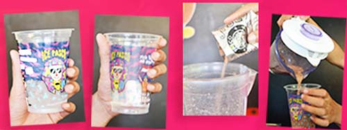
CARA PEMBUATAN MUDAH
- Sediakan es batu
- Sediakan air mineral
- Seduhkan 1 bubuk Pasco
- Tuangkan Pasco
RINCIAN UNTUK SETIAP CUPNYA
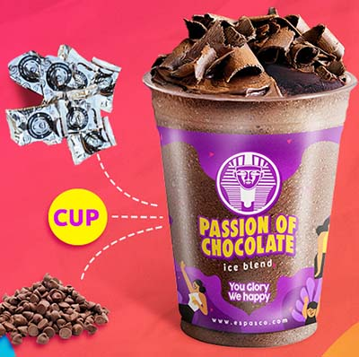
Untuk setiap cup paket pasco yang didapat antara lain :
- 1 Sachet bubuk
- 1 cup/ gelas + tutup cembung
- 1 sedotan
- Cokalat serut
- Choco chip
PILIHAN MENU ES PASCO
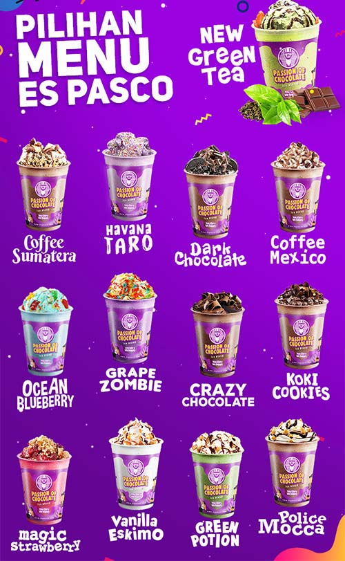
NEW GREEN TEA COFFEE SUMATERA HAVANA TARO DARK CHOCOLATE COFFEE MEXICO OCEAN BLUEBERRY GRAPE ZOMBIE CRAZY CHOCOLATE KOKI COOKIES MAGIC STRAWBERRY VANILA ESKIMO GREEN POTION POLICE MOCCA
PILIHAN PAKET FRANCHISE
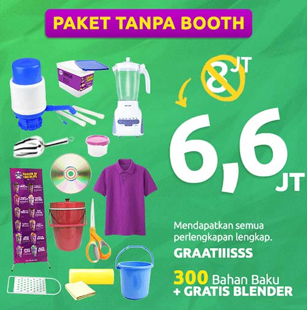
PAKET TANPA BOOTH
Dari harga 8jt diskon menjadi 6,6jt saja!
Mendapatkan semua paket perlengkapan lengkap. GRATIIISSS. 300 Bahan Baku + GRATIS BLENDER
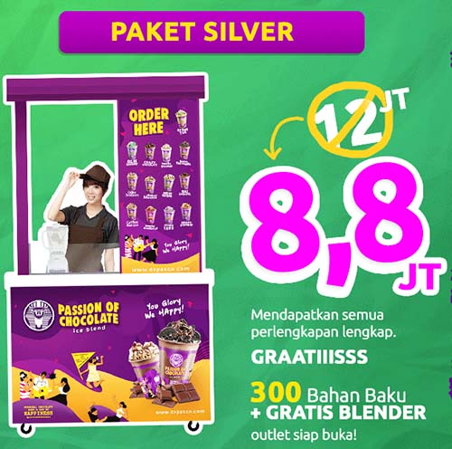
PAKET SILVER
Dari harga 12jt diskon menjadi 8jt saja!
Mendapatkan semua paket perlengkapan lengkap. GRATIIISSS. 300 Bahan Baku + GRATIS BLENDER. Outlet siap buka!
PERLENGKAPAN YANG DIDAPAT
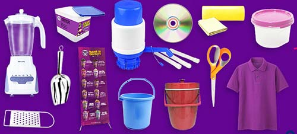
- Booth (khusus untuk paket booth) : 1 buah
- Philips blender : 1 buah
- Tempat bubuk : 11 buah
- Tempat es batu : 1 buah
- Tempat choco chip : 1 buah
- Tempat coklat seru : 1 buah
- Ember : 1 buah
- Gelas takar : 1 buah
- Seragam : 2 buah
- Bahan baku bubuk : 300 sachet
- X-banner : 1 buah
- Gunting : 1 buah
- kanebo : 1 buah
- Parutan : 1 buah
- Pompa galon : 1 buah
- Serok es batu : 1 buah
- SOP CD : 1 buah
- Sendok topping : 1 buah
- Co card 2 buah
MAU GABUNG SANGAT MUDAH
TELPON MARKETING DEAL & TRANSFER KIRIM, SIAP JUALAN
ORDER BUBUK LAGI? GAMPANG…
1. Pesan ke Customer Service 2. Pesanan dikirim 3. Stock aman, jualan tetap jalan
PERHITUNGAN R.O.I
ROI Penjualan Umum
Perhitungan penjualan umum
Investasi awal : Rp 8.800.000,-
Penjualan 90 cup/ hari @ Rp 7.000 : Rp 18.900.000,- ( 90 x 7000 x 30 hari )
Pembelian bahan baku @ Rp 3.400 : Rp 9.180.000,-
Biaya Operasional : gaji karyawan : Rp 900.000,- operasional : Rp 500.000,- sewa lokasi : Rp 1.000.000,- Total biaya operasional : Rp 2.400.000,-
LABA BERSIH Rp 7.320.000,-
B.E.P : 2 BULAN
BUKTI PENGIRIMAN
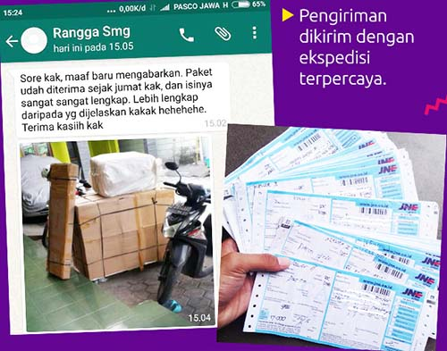
Pengiriman dikirim dengan ekspedisi terpercaya
PAKET SAMPLE
Paket Sample List :
10 Varian rasa Pasco Cup + Tutup & Sedotan Topping
SOP cara pembuatan
Rp.100.000
HARGA BELUM TERMASUK ONGKIR
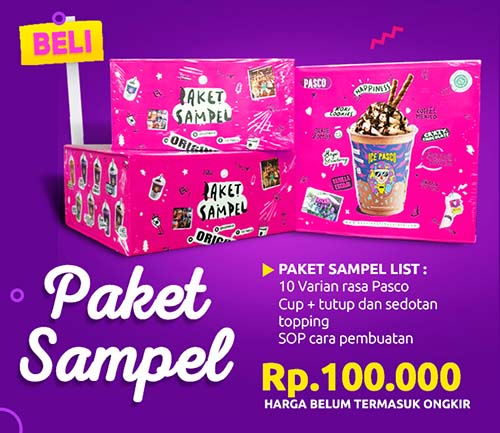
PANDUAN SUKSES GRATIIISS
Kami memiliki rahasia dibalik kesuksesan untuk Anda!
- Mendapatkan BEP kurang dari 1 bulan
- Menjual 120 pack dalam 2 jam
- Meningkatkan keuntungan 50% tiap bulannya
- Penempatan lokasi paling strategis

DAPAT GRAATISS VIDEO CARA SUKSES
Dapatkan VIDEO CD TALKSHOW SUKSES PASCO “FREE” :
- Cara memilih lokasi
- Cara memilih karyawan
- Cara memperoleh pendapatan penjualan 300 cup/ hari
- Cara agar asumsi berjalan dengan lancar dan uang dapat berputar dengan baik
TEAM FOLLOW UP
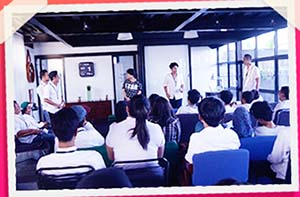
Kami mempunyai team yang akan mem follow-up semua mitra, everyday, secara intents untuk mencapai penjualan maksimal
TEAM MARKETING
Membantu dalam menghandle mitra
TEAM CUSTOMER SERVICE
Membimbing mitra agar mencapai penjualan tinggi
TEAM DESIGN
Update design terbaru
TEAM PRODUCTION
Mengontrol kualitas dan mutu produk
PENGADAAN GATHERING
Untuk sharing antar mitra
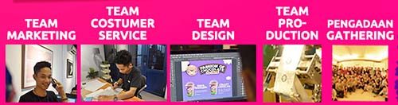
PASCO ARTIST
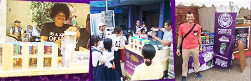
#EDDIBROKOLI
Aktor yang dikenal luas dengan nama Eddi Brokoli ini memulai karier dengan ikut bermain dalam film film Ada Apa Dengan Cinta, The Tarix Jabrix, dll. Eddi Brokoli juga merupakan salah satu mitra Pasco untuk wilayah Bandung.
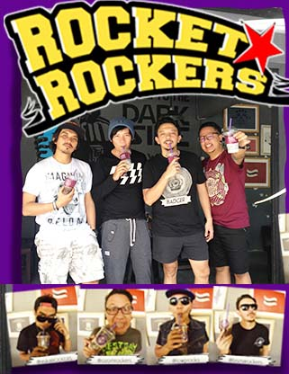
#ROCKETROCKERS
Band Pop Punk asal Bandung, ROCKET ROCKERS menyempatkan diri mengunjungi outlet pusat Pasco. Serangkaian event yang diselanggarakan oleh Pasco Pusat. ROCKET ROCKERS tampil pada event Pasco “Colour is Fun” ( April 2014 ).
PASSION OF WORKSHOP
Demi menunjang kelancaran usaha mitra kami memiliki workshop sendiri
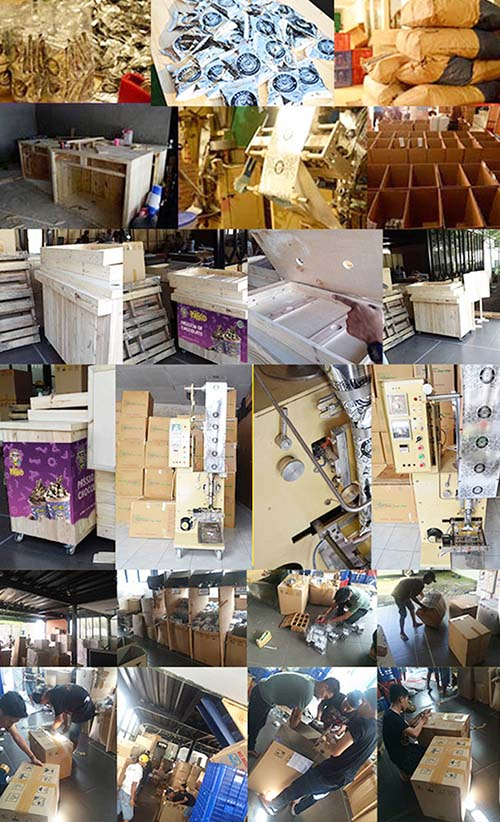
PASSION OF GATHERING
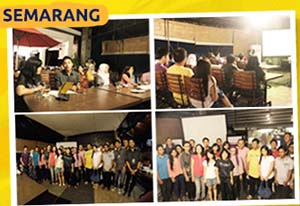
SEMARANG
Keseruan kumpul-kumpul dan sharing antara mitra Pasco yang berada di wilayah Semarang. Mereka mengikuti berbagai talkshow yang bermanfaat untuk meningkatkan sales serta perkembangan outlet. Tentunya acara ini sangat disambut baik dan diikuti dengan antusias mitra yang sangat tinggi.
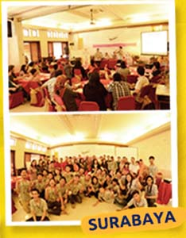
SURABAYA
Keseruan kumpul-kumpul dan sharing antara mitra Pasco yang berada di wilayah Surabaya. Mereka mengikuti berbagai talkshow yang bermanfaat untuk meningkatkan sales serta perkembangan outlet. Tentunya acara ini sangat disambut baik dan diikuti dengan antusias mitra yang sangat tinggi.
JAKARTA
Keseruan kumpul-kumpul dan sharing antara mitra Pasco yang berada di wilayah Jakarta. Mereka mengikuti berbagai talkshow yang bermanfaat untuk meningkatkan sales serta perkembangan outlet. Tentunya acara ini sangat disambut baik dan diikuti dengan antusias mitra yang sangat tinggi.
BALI
Keseruan kumpul-kumpul dan sharing antara mitra Pasco yang berada di wilayah Bali. Mereka mengikuti berbagai talkshow yang bermanfaat untuk meningkatkan sales serta perkembangan outlet. Tentunya acara ini sangat disambut baik dan diikuti dengan antusias mitra yang sangat tinggi.
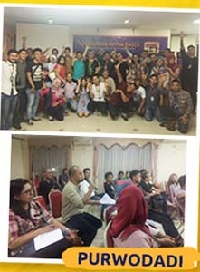
PURWODADI
Keseruan kumpul-kumpul dan sharing antara mitra Pasco yang berada di wilayah Purwodadi. Mereka mengikuti berbagai talkshow yang bermanfaat untuk meningkatkan sales serta perkembangan outlet. Tentunya acara ini sangat disambut baik dan diikuti dengan antusias mitra yang sangat tinggi.
SOLO
Keseruan kumpul-kumpul dan sharing antara mitra Pasco yang berada di wilayah Solo. Mereka mengikuti berbagai talkshow yang bermanfaat untuk meningkatkan sales serta perkembangan outlet. Tentunya acara ini sangat disambut baik dan diikuti dengan antusias mitra yang sangat tinggi.
PERSYARATAN & FASILITAS UNTUK MITRA PASCO
SYARAT
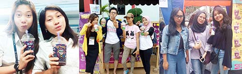
- Memiliki modal yang cukup untuk investasi sesuai harga paket franchise
- Memiliki komitmen terhadap bisnis ini untuk maju dan berkembang bersama
- Bersedia meluangkan waktu untuk terjun langsung mengawasi perkembangan outlet
- Memahami resiko bisnis
- Bersedia menaati peraturan yang ada dalam surat kerja sama
- Wajib membeli bahan baku dari pusat
FASILITAS
Lokasi berada di tempat strategis : didepan pusat keramaian /didepan sekolah - sekolah menengah keatas, kampus atau mini market
Luas ukuran tempat sewa minimal sesuai dengan ukuran counter ( 120 cm x 60 cm )
Karyawan
F.A.Q
Beberapa pertanyaan dari calon mitra yang sering muncul & kami senantiasa memberikan solusinya
M = Bagaimana menjadi mitra Passion of Chocolate?
P = Bisa lihat di persyaratan untuk menjadi mitra Passion of Chocolate
M = Apa yang membedakan franchise Pisang Nugget Kece dengan yang lain?
P = Franchise kami bisa dibuka di indoor maupun di outdoor. Dan Passion of Chocolate berbeda dari franchise yang lainnya bukti yang real, bukan hanya testimonial
M = Apakah dikenai biaya dalam pengiriman booth?
P = Biaya pengiriman ditanggung oleh mitra
M = Berapa ukuran booth Passion of Chocolate?
P = Kurang lebih 60cm x 120cm
M = Jika mitra sudah merasa cocok apa yang harus dilakukan?
P = Langsung menghubungi bagian marketing untuk cara gabungnya
M = Setelah mengisi perjanjian kontrak apa yang harus dilakukan?
P = Calon mitra bisa melakukan pelunasan dengan mentransfer uang senilai paket franchise yang dipilih ke rekening yang sudah diinformasikan oleh bagian marketing
M = Bagaimana jika dalam satu kota sudah ada outlet Passion of Chocolate?
P = Dalam satu kota tidak masalah ada beberapa outlet, asalkan radius antara outlet minimal 1 km
M = Untuk karwayan apakah disediakan dari pusat?
P = Tidak,untuk karyawan disediakan oleh mitra
M = Bagaimana dengan training karyawan dan cara penyajian Passion of Chocolate?
P = Kami mengirim SOP berupa CD yang dikirim bersamaan dengan booth, yang bersifat mudah diterapkan
M = Apakah boleh jika berpindah lokasi dalam berjualan?
P = Mitra boleh berpindah lokasi asalkan meminta ijin ke kantor pusat dan memberikan alamat lokasi yang baru sebelum berpindah tempat
M = Apakah mitra diperbolehkan dalam mengubah harga jual per porsi?
P = Kami tidak mematok harga per porsi, kami hanya menyarankan untuk harga jual per porsi kisaran Rp 5.000 s/d Rp 8.000 disesuaikan dengan daya beli disekitar outlet
PASSION OF TEAM
CREATING A GOOD LIFE
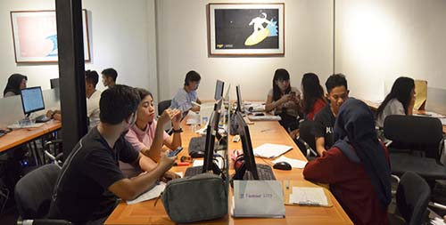
#ANSENAFAMILY
**Office : Monday - Saturday 08.00 - 16.00 /Sunday off
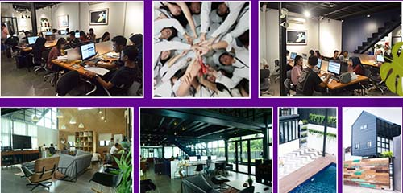
GREAT TEAM at BALI February 24 - 27, 2015
COLOR IS FUN ft. ROCKET ROCKERS April 20th, 2014
OUTBOND Season 1 October 8-9, 2012 / Grogan Sewu, Karanganyar
OUTBOND Season 2 April 27-28, 2013 / Lawu Resort ( camp, music, etc )
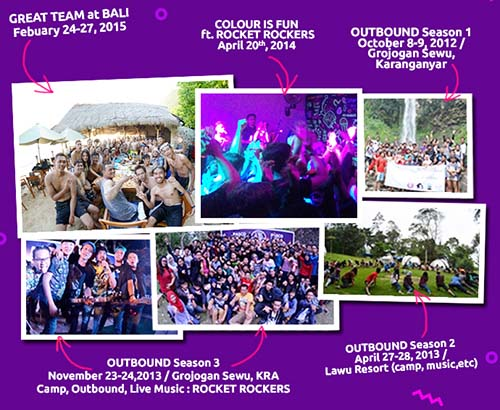
SUSAH & SENANG BERSAMA
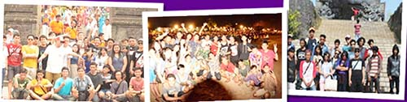
Passion of Chocolate vacation to BALI October 18-22, 2013
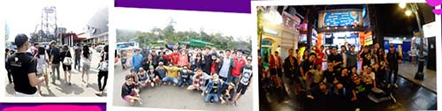
Passion of Chocolate vacation to BANDUNG June 13-15, 2014
Gabung bersama Passion of Chocolate dan jadilah salah satu mitra sukses kami!
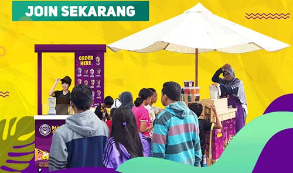
Tagar: #bisnis kuliner #passion of chocolate #bisnis minuman